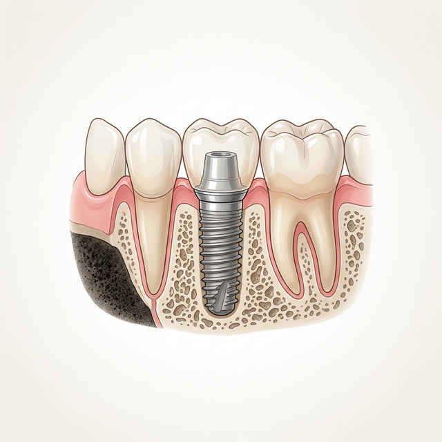
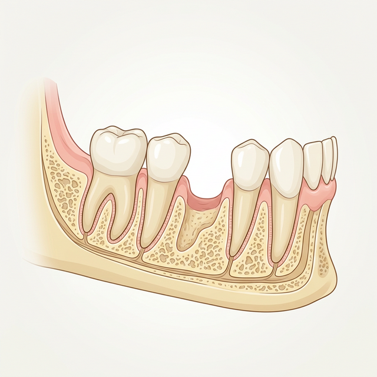
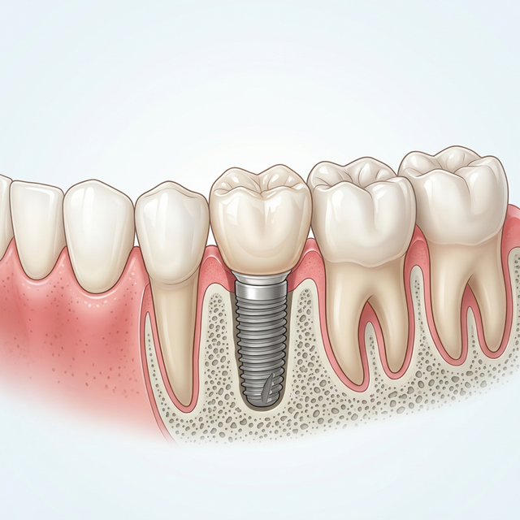
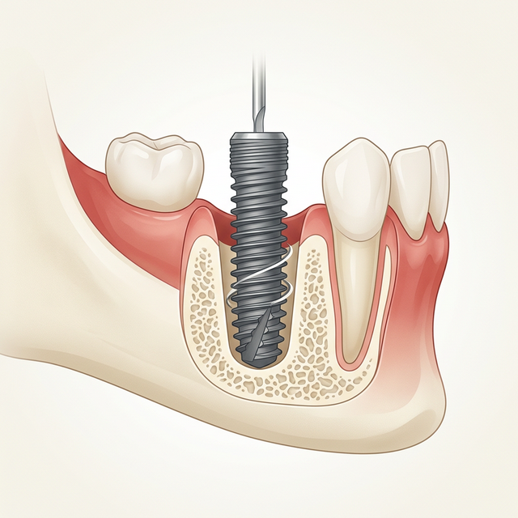
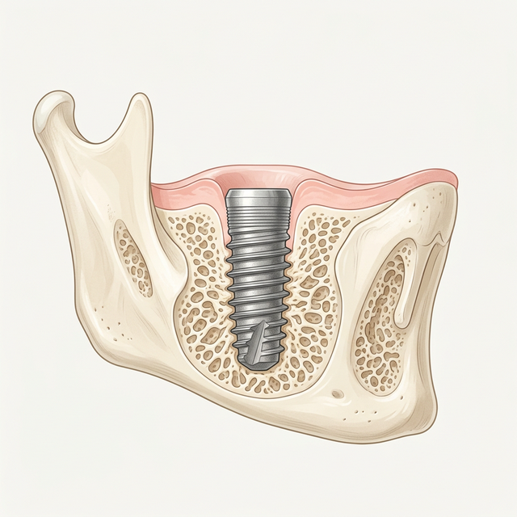

Dental Implants
The gold standard for replacing missing teeth — permanent, natural-looking, and designed to last a lifetime with proper care.

What Are Dental Implants?
Dental implants are artificial tooth roots, typically made of biocompatible titanium, that are surgically placed into the jawbone. Once the implant fuses with the bone (a process called osseointegration), it acts as a stable foundation for a custom dental crown or bridge on top.
Unlike dentures or bridges, implants replace the root of the tooth — preserving the jawbone, maintaining facial structure, and delivering a result that looks, feels, and functions exactly like a natural tooth. With proper care, they can last a lifetime.
Why Replacing a Missing Tooth Matters
Leaving a gap untreated sets off a chain reaction that affects far more than just your smile. Understanding what happens helps explain why implants are such a worthwhile investment.

! The Hidden Cost of a Missing Tooth
When a tooth is lost, the jawbone beneath it begins to shrink within the first year — because there is no root to stimulate it. Neighboring teeth start to drift and tilt into the gap, disrupting bite alignment. Over time, this can cause facial sagging, jaw pain, and difficulty chewing. The longer the gap remains, the more complex and costly the solution becomes.

✓ The Implant Advantage
A dental implant replaces the root, not just the visible crown. This means the jawbone continues to receive the stimulation it needs to stay healthy and dense. The result? Preserved facial structure, stable neighboring teeth, and a tooth that you brush, floss, and forget — just like it was always there.
Factors That May Lead to Needing Implants


Your Implant Journey — Step by Step
1 Comprehensive Assessment
We begin with detailed X-rays and a full evaluation of your jawbone density, gum health, and bite. A personalized treatment plan is created, outlining the number of implants needed, the timeline, and any preparatory steps (such as bone grafting if needed).

2 Implant Placement
Under local anesthesia (and sedation if preferred), the titanium implant is precisely placed into the jawbone at the site of the missing tooth. The procedure is minimally invasive and most patients are surprised by how comfortable it is. A healing cap covers the implant site.

3 Osseointegration — Fusing with Bone
Over the next 3–6 months, the jawbone slowly grows around and bonds directly to the titanium implant surface — a process called osseointegration. This is what gives the implant its remarkable stability and strength. During this period, a temporary restoration maintains your smile.
4 Abutment & Crown Placement
Once the implant has fully integrated, a small connector piece (the abutment) is attached. Your custom porcelain or zirconia crown — precision shade-matched to your natural teeth — is then fixed permanently on top. The result is indistinguishable from the teeth around it.
Why Choose Implants?


Caring for Your Implants
The success of your implant is significantly influenced by how well you care for it — both immediately after surgery and in the long term.
- Practise good oral hygiene: Brush twice daily with a soft-bristled toothbrush and non-abrasive toothpaste. Floss carefully around the implant using an implant-safe floss or interdental brush.
- Eat soft foods initially: In the first few days after implant surgery, stick to soft, nutritious foods to protect the surgical site and allow undisturbed healing.
- Rinse with saltwater: Gentle saltwater rinses several times a day can reduce swelling and support healing in the days following surgery.
- Take medication as directed: Use prescribed or recommended pain relief as directed. Do not exceed the recommended dose.
- Attend all follow-up appointments: Regular monitoring allows us to track osseointegration, check the fit of your restoration, and intervene early if any concerns arise.
- Avoid smoking: Smoking significantly impairs blood supply to the gum tissue and dramatically increases the risk of implant failure. We strongly recommend avoiding it during the healing period and beyond.
- Wear a nightguard if needed: If you grind or clench your teeth, a custom nightguard protects the implant crown from excessive forces that could loosen or damage it over time.
Frequently Asked Questions
The procedure is performed under local anesthesia, so you should feel no pain during the surgery itself — only mild pressure. Most patients are surprised by how manageable the recovery is. Post-operative soreness typically responds well to standard over-the-counter pain relief and resolves within a few days.
The complete process from implant placement to final crown typically takes 3–6 months, with most of that time being the osseointegration healing phase rather than active treatment. Cases requiring bone grafting may take longer. While it is a journey, the end result is a permanent, lifetime solution.
Most healthy adults with adequate jawbone are good candidates. Key factors include good general health, sufficient bone density to support the implant, and healthy gums free of active periodontal disease. In cases of bone loss, a bone grafting procedure can often make implants possible. We will assess your suitability comprehensively at your consultation.
The implant fixture itself can last a lifetime with proper oral hygiene and regular dental visits. The crown placed on top may need to be replaced after 10–15 years due to normal wear. Overall, implants have the longest lifespan of any tooth replacement option available today.
True rejection — as seen with organ transplants — does not occur with titanium implants because titanium is bioinert and does not trigger an immune response. However, implant failure can occur due to infection, poor bone integration, or excessive bite forces. This is why selecting a skilled clinician and following aftercare instructions are so important.
Absolutely. Multiple individual implants can replace multiple missing teeth independently. For patients missing all or most of their teeth, implant-supported bridges or implant-supported dentures (using as few as 4 strategically placed implants) can restore an entire arch — fixed and permanently stable.
Caring for an implant is very similar to caring for a natural tooth — brush, floss, and attend regular dental check-ups. Avoid smoking, and let us know if you grind your teeth so we can arrange appropriate protection. With this routine, your implant can serve you for decades without issues.
Replace Missing Teeth — Permanently.
Experience the most natural-feeling, long-lasting tooth replacement available. Schedule a consultation to find out if implants are right for you.
Get in Touch
We're ready to discuss your personalized care plan. Fill out the form or reach us directly.